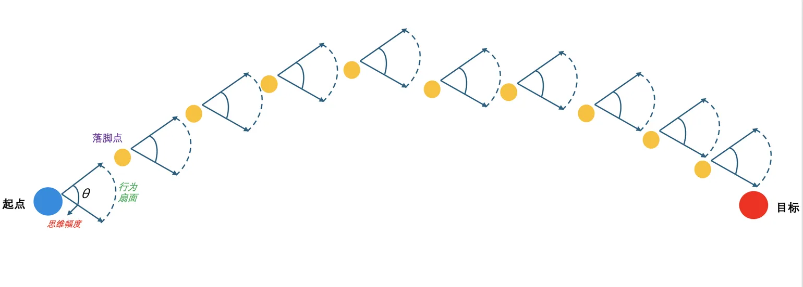
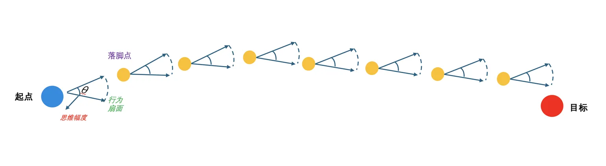

实战：多 Agent 协作开发工厂（issue → 编码 → 审查 → 部署 → 测试 闭环）
项目定位
可直接 fork 到生产仓的多 Agent 治理骨架。1 个 main 调度 + 5 个子 Agent 各司其职，以 CNB Issue 为唯一事实来源，完成 issue → 编码 → 审查 → 部署 → 测试 闭环。
理论基石：思维幅度 θ 与 while 循环
动手搭 5 个 Agent 之前，先理解两个底层模型——本项目的设计决策都源自于此：
① 约束哲学：AI 问题 = 思维幅度过大
AI 不是线性推进，而是分步、按概率逼近目标。每一步落在一个「行为扇面」里——扇面越宽，偏离越快，越难收敛。
无约束 · θ 发散

有规则 · θ 收敛（同一起点/目标 · 路径急剧缩短）

🎯 三类规范的作用就是把蓝色宽扇面压缩为绿色窄扇面，让 AI 从"10 步绕路"变"4 步直达"。
② 运行原理：长时框架本质是 while 循环
从程序员视角，长时运行框架就是一个 while。构造它需要明确两件事：
循环能跑稳的关键：清晰的退出条件（所有 issue 关闭 & bug 修复）+ 每一步动作收敛（靠三类规范）。后文的治理四层栅栏、评价体系、事故复盘，都是在确保这个 while 不跑飞。
架构全景 · 5 子 Agent 协作流 + 谁调度谁
用户通过 CNB Issue 下达需求；main 只调度、不写业务代码；coding / review / deploy / test 各司其职，improvement 常驻横向监督，每 2h 汇总。所有协作状态以 CNB Issue 为唯一事实来源。

用户 → main agent（管理者，只调度）
│
├──► coding-agent → 编码实现
├──► review-agent → 代码审查
├──► deploy-agent → 部署流水线
├──► test-agent → 测试验证
│
└──► improvement-agent（常驻横向监督）
↑
CNB Issue（唯一事实来源）谁调度谁 · 信息流矩阵
main下达需求Issue 编号 / 诉求描述main → coding30min 轮询 / 手动派单分支策略 + 验收标准 + ACK 要求coding → reviewPR 创建后分支名 + commit + 变更摘要review → deploy审查通过分支 + commit + 审查纪要deploy → test测试环境就绪环境地址 + 健康检查结果test → coding/main发现 bug / 测试通过Issue 编号 + 失败详情 或 关闭动作improvement → main每 2h / 发现异常健康报告 + 改进建议💡 这张表展示 agent 之间的调度关系。agent 具体调用哪些 skill 完成任务，见 §6 Skill 典型协作链路。
■ 端到端协作演示视频
完整记录从 Issue 创建到部署上线的全过程。
治理四层栅栏 + .codebuddy 目录结构
多 Agent 失控的根因不是"agent 不够强"，而是"没有共同的法律"。本项目用四层栅栏解决决策漂移——从温和提醒到强制拦截层层递进：
CODEBUDDY.md底线 / 一票否决 · ≤ 500 行 · 带惩罚措施 main + 用户双批
.codebuddy/rules/*.md条件触发的建议性规则（会随多轮对话衰减） improvement 起草 · main 审 · 用户确认
.codebuddy/agents/*.md各 agent prompt（内嵌"禁止清单"） improvement 起草 · main 审 · 用户批
.codebuddy/hooks/ + settings.json程序级强制拦截（rules 被跳过时的救命稻草） 用户直接配置 · main 无权动
失效升级路径
规则总会被 AI"跳过"，按此链条逐级升级，直到约束落地生效。
.codebuddy/rules/*.md.codebuddy/hooks/ + settings.jsonCODEBUDDY.md.codebuddy/skills/<name>/💡 约束强度：①提示 < ②程序拦截 < ③全局底线；④是对高频场景的流程化沉淀，让规则"可调用"而非"靠记"。
CODEBUDDY.md 七大底线
hooks > CODEBUDDY.md > rules/ > agents/*.md，冲突时以前者为准——避免多 Agent 决策漂移的核心机制。
■ .codebuddy/ 内部结构（真实目录）
整套治理骨架约 15 个 Markdown + 1 个 config.json，零业务代码即可让任何 CNB 仓库具备多 Agent 开发能力。
.codebuddy/
├── agents/ # 5 个 agent prompt 模板
│ ├── coding-agent.md # 每 30 分钟拉 issue → 独立分支编码
│ ├── review-agent.md # 安全 + 规范 + 架构审查
│ ├── deploy-agent.md # 测试/生产流水线（生产需用户批准）
│ ├── test-agent.md # 单测 + 集成测试 + 回写 issue
│ └── improvement-agent.md # 常驻监督，每 2 小时汇报
├── teams/dev-factory/
│ ├── config.json # 运行时配置（leadAgentId + 6 成员）
│ └── inboxes/ # 各 agent 消息队列（JSON）
│ ├── team-lead.json
│ ├── coding-agent.json
│ ├── review-agent.json
│ ├── deploy-agent.json
│ ├── test-agent.json
│ └── improvement-agent.json
├── teams/dev-factory.bak-*/ # 历次重建的备份（取证用，共 3 份）
├── skills/ # 12 个官方复用 + 2 个项目原创
│ │ # （官方源自 cnb.cool/cnb/skills/cnb-skill）
│ ├── cnb-api/ cnb-pipeline/ cnb-knowledge-base/ # 官方
│ ├── code-commit/ code-review/ pr-diff/ pr-summary/ # 官方
│ ├── npc-search/ npc-delegate/ # 官方
│ ├── text-path-converter/ tapd-resource-fetcher/ # 官方
│ ├── upload-attachment/ # 官方
│ ├── team-build/ # 🛠️ 项目原创（多 Agent 编排核心依赖）
│ └── cnb-pr-review/ # 🛠️ 项目原创（cnb.woa.com 内部 PR 评审）
├── improvement/
│ ├── log-2026-04.md # 月度事件日志（本案例 1000+ 行真实记录）
│ ├── proposal-20260422-*.md # 系统性问题改进提案
│ └── stuck-log.md # 阻塞登记（需 main/用户介入的事项）
├── rules/README.md # 非强制建议索引
└── automations/*/memory.md # automation 任务记忆
— 项目根 —
CODEBUDDY.md # 核心底线（宪法层）
team.md # 团队重建指南（5 步启动脚本）
.env / .env.example # 密钥（前者必 gitignore）
skills-lock.json # 官方 skill 的版本锁文件（CLI 生成；只锁官方，不锁原创）五子 Agent 深度拆解 + 协作协议三要素（Prompt 六段式）
角色 / 职责 / 输入 / 输出 / 禁止 / 升级。用"禁止清单"比"允许清单"更有效，是本案例踩坑沉淀出的最重要经验。
核心职责
- 定时拉取 CNB
state=open && unassigned的 issue，按优先级排序 - 每个大模块独立分支：
feat/<module>-<issue_id>或fix/<module>-<issue_id> - 微服务原则：每个模块独立 service，接口明确定义
- 小步提交，commit message 关联 issue id
- 编码完成 →
send_message给 review-agent（附分支名、变更摘要、影响面）
禁止（红线）
- 跨分支混改
- 把密钥写入代码 / 日志 / commit / issue
- 直接推送到
main/master/ 生产分支 - 自行发起部署或跳过审查
- 对用户面的大改动未经主 agent 确认
工作循环（伪代码）
loop every 30min:
issues = cnb.list_issues(state="open", unassigned=True)
for issue in prioritize(issues):
branch = checkout_module_branch(issue)
plan = design(issue)
if plan.needs_approval: notify(main); wait()
implement(plan)
push(branch)
notify(review-agent, branch, summary)
release_context()核心职责
- 分支隔离：每次只审一个分支，结果标注
branch + commit - 审查维度（按优先级）：① 安全（密钥/SQLi/XSS/越权）② 规范（命名/异常/文档）③ 架构（微服务边界）④ 性能/可观测性
- 通过 → 通知 deploy-agent；不通过 → 返工清单给 coding-agent（按文件+行号）
- 发现 blocker 级问题或架构性问题必须抄送 main
审查报告格式
分支: feat/xxx-123
commit: abc1234
结论: FAIL / PASS
问题清单:
[BLOCKER] path/to/file.py:42 硬编码 API Key，必须改为 env 读取
[MAJOR] path/to/file.py:88 未处理网络超时异常
[MINOR] path/to/util.py:10 变量命名不符合规范
架构意见: ...
安全意见: ...禁止（红线）
- 亲自修改代码（只指出，不动手）
- 跨分支对比得出结论
- 放过任何密钥泄露风险（一律 BLOCKER）
- 未看完就放行
核心职责
- 触发：review 放行 → 自动部测试；main 明确指令 → 才可部生产
- 环境隔离（强制）：每条分支 = 独立测试流水线 + 独立测试环境
test-<branch-name>；测试与生产物理隔离（不同凭据、网络、数据源） - 成本控制：测试环境空闲 1h 自动销毁；同一分支禁止同时拉多个环境
- 生产保护：用户批准 + main 指令 + 灰度/蓝绿/可回滚；变更清单二次确认
环境矩阵
test-<branch>review 通过.env.test / 测试密钥仓库空闲 1h 自动禁止（红线）
- 无审查即部署 / 无用户批准部生产 / 跨分支复用测试环境
- 把生产凭据注入测试流水线（反之亦然）
- 关闭回滚能力 / 跳过灰度
核心职责
- 测试层次：① 单元测试 ② 集成测试（service 间接口 / DB / 中间件） ③ 回归测试 ④ 安全/性能冒烟
- 分支标记：每份报告必须含
branch + commit + test-env-url；不同分支结果严禁合并 - 发现问题 → 提 CNB issue（标签
bug+from-test-agent+branch:<name>） - 测试通过 → 关闭功能 issue，附测试报告摘要
报告格式
分支: feat/xxx-123
commit: abc1234
环境: https://test-feat-xxx-123.example.com
用例总数: 120
通过: 118 失败: 2 跳过: 0
覆盖率: 行 87% / 分支 78%
失败详情:
1. test_user_login_expired — 断言失败：期望 401，实际 500
→ 已提 issue #456，指派 coding-agent
结论: FAIL禁止（红线）
- 把生产数据用作测试输入
- 日志 / issue 中原样暴露密钥 / token / 用户隐私
- 为了通过测试修改业务代码（修改权在 coding-agent）
- 跳过失败用例不上报
核心职责
- 常驻监听：订阅所有 agent 关键事件（失败/返工/冲突/超时/成本）；每 2h 汇总健康报告
- 问题记录：结构化存档到
improvement/log-YYYY-MM.md；同类 ≥3 次升级"系统性问题"必产提案 - 改进提案：
proposal-<yyyymmdd>-<slug>.md（背景/现象/根因/方案/收益/风险/批准级别） - 主动清理（自主范围）：过期分支 / 空闲测试环境 / 矛盾 rules / 过期 issue
- 指标看板：闭环时长、返工率、一次通过率、测试失败 TOP、部署失败率、成本趋势
工作循环（伪代码）
loop forever:
events = collect_events_since(last_tick)
classify(events) → {incidents, warnings, cost, conflicts}
append_to_log(events)
if qualifies_autonomous_cleanup(e): perform_cleanup(e); record()
if systemic(pattern): draft_proposal(pattern); notify(main)
if elapsed >= 2h: send_health_report(main)
sleep(short)禁止（红线）
- 停止运行 / 静默
- 未经批准修改
CODEBUDDY.md或核心 agent 职责 - 自行删除有未结归档的问题记录
- 越权代替其他 agent 执行其本职工作
🧬 团队演进：5 人基础班底 → 7 人深化版
真实运行中，5 人基础班底暴露两个缺口：① 项目推进缺人催单 ② coding-agent 缺前置规划。因此扩展为 7 人：
delegate 模式替代，无需再手写"不许亲自执行子任务"这类约束。
⚙️ 运行模式：为什么选 delegate？
automation_update 不可用）。新建 / 修改定时任务时需临时切回普通模式，完成后再切回 delegate。
协作协议三要素（本案例原创沉淀）
4.2.1 CNB Issue = 唯一事实来源
所有 agent 的输入输出、状态扭转、上下文都通过 Issue 评论持久化，任何重启或换人介入都能无损恢复。以 Issue #6 CI runner 升级 为例：
fix(build): xxx (ref: #9) 或 (close #9)），PR body 必含 Closes #N，CNB 留下全链路证据。
4.2.2 Agent 消息协议（ACK 硬约束）
每个 agent 的 inbox 是一份 JSON 数组，消息协议如下：
{
"id": "msg-1776868944171-swpial",
"from": "team-lead",
"to": "coding-agent",
"type": "message", // 或 "broadcast"
"content": "执行 Issue #9 收尾链...",
"timestamp": "2026-04-22T14:42:24.171Z",
"read": true
}## 角色 之后必须内置以下约束：
send_message，禁止静默（即使内容是「条件不满足，弃单原因 XXX」）。
4.2.3 六段式派单模板（可直接复制）
所有 main → 子 agent 的派单都遵循此模板，让交棒无歧义：
AI 记忆体系六层 + 评价体系三评分器
"金鱼记忆"在长时项目中必然出现。理解 CodeBuddy 的六层记忆、分清哪些可干预，才能让团队越用越顺手。
CODEBUDDY.md · rules/*.md生命周期：持久（但不热加载）
生命周期：会话级 · 工具托管
生命周期：会话级 · 工具托管
memory/ 目录生命周期：跨会话 · 团队共享
/summarize（可显式调用）生命周期：会话级
生命周期：后台自动触发清冲突
- 核心规则放
CODEBUDDY.md（指令记忆），但控制在 500 行以内，避免衰减 - 高频场景沉淀
memory/<topic>.md（长期记忆），跨 agent 共享 - 主动
/summarize：长对话中手动触发摘要，而不是等 token 满 - 可考虑外挂记忆体系（如 mem0）扩展 CodeBuddy 原生能力
评价体系三评分器：没评价等于失控
参考 Anthropic《Demystifying Evals for Agents》，建立层层递进的三级评分器：
lint / 类型检查 / 单测 / 断言
通过
hooks 强制执行可读性 / 架构 / 文档 / UX
review-agent +
rules 显式触发边界案例 / 生产前最终闸门
用户本人 + PR 审批流
强制执行：代码生成之后必须过评分器
hooks（强制拦截）+ rules 显式触发 skills 确保。这也是本项目 rules/ 里每条关键规则都带"调用 <skill-name>"硬触发的原因。
Skill 编排 + 事故复盘（四个最经典的坑）
.codebuddy/skills/ 共 14 个——12 个来自官方仓库（通用能力），2 个项目原创（team-build 多 Agent 编排核心，cnb-pr-review 内部 CNB 平台定制）。两者目录结构一致，唯一区别是是否被 skills-lock.json 锁定版本。
两类 Skill 对比
.codebuddy/skills/<name>/
不进入 skills-lock.json，随仓库 git 管理
直接改 SKILL.md
A · 官方复用（12 个）— 按副作用等级分组
cnb-knowledge-base · pr-diff · pr-summary · text-path-converter · npc-searchCNB_TOKEN，会产生评论或 API 调用cnb-api · cnb-pipeline · tapd-resource-fetchercode-commit · code-review · npc-delegate · upload-attachmentB · 项目原创（2 个）— 重点展开 team-build
项目原创包含 team-build（多 Agent 编排核心，本节重点）与 cnb-pr-review（内部 CNB PR 评审适配，不再展开）。team-build 是整个多 Agent 系统能"一键启动、重复可建"的关键。
为什么是核心：前面所有章节讲到的"一键拉起 team / 自动绑定 5 个子 agent + 共享 inbox + 配置 automation"，全部由 team-build 完成。它把 CodeBuddy 原语（team_create / task / automation_update）封装成声明式配置，只需一份 team.md 就能在任意环境一秒复刻同款团队，也是本案例 team 重建 4 次每次兜底的功臣。
六步工作流（来自真实 SKILL.md）
team.md 或 config.json）原生文件 IO.codebuddy/agents/*.md 加载 prompt原生文件 IOteam_create(team_name, description)task(subagent_name="code-explorer", name, prompt, mode)automation_update(mode="suggested create", rrule)teams/<name>/inboxes/*.json三个关键设计决策
- 所有子 agent 统一用
code-explorer作为底层 subagent，通过注入不同 prompt 实现差异化角色 —— 无需为每个角色编写独立的 agent 定义文件 - 成员名 = agent 模板文件名：一眼能从文件名看出角色职责（如
coding-agent.md→coding-agent成员） - automation 最细粒度为 1 小时（HOURLY）：想要 30 分钟调度需写
INTERVAL=0.5，但平台可能不支持 —— 这也是本案例"improvement-agent 每 2 小时汇总"的由来
错误处理矩阵
team_create 失败回滚已创建的成员，报告错误automation_update 失败记录失败任务，继续执行其他💡 team-build 是"声明式多 Agent 编排"的范例：用户维护配置（team.md + agents/*.md），skill 将其"编译"成运行时实例。新增子 agent 只需：① 写一份 <new-agent>.md ② 在 team.md 加一行 ③ 再跑一次 team-build，零代码。
C · 可扩充的原创 Skill 方向（待实现）
team-build / cnb-pr-review），Skill 机制的扩展潜力远不止于此。基于 1000+ 行 improvement log 沉淀出的痛点，下列 skill 方向可按需扩展：
inbox-janitor
清理重复派单 + 催促反模式检测（WATCH-004 O1）
读写 inboxes/*.json
health-reporter
自动生成月度健康报告（从 log-YYYY-MM.md 聚合指标）
读 log + 写入报告文件
proposal-drafter
当同类问题 ≥3 次时自动起草 proposal-*.md 初稿
log 解析 + 模板渲染
branch-fixer (已有 service)
扫描仓库默认分支异常并修正（本项目 issue #1 同名 service 已实现）
CNB API + dry-run
agent-template-validator
校验 agents/*.md 是否包含 ACK 硬约束 / 六段式结构完整
Markdown 解析 + schema 校验
stuck-detector
检测 agent 静默（ACK 后长期零外发）→ 自动登记 stuck-log.md
inbox 扫描 + 时间戳比对
💡 识别原创 skill 的三条件：① 跨 agent 复用 ② 固定步骤可解决 ③ 当前靠 prompt 硬编码。三者满足即应抽成 skill——官方仓库只提供通用能力，业务级流程必须靠原创 skill 沉淀。
典型协作链路（不区分来源，混合使用）
cnb-api → text-path-converter → 分析 → cnb-api（评论）pr-diff → code-review（官方）pr-diff → cnb-pr-review（原创）pr-diff → pr-summarycnb-api → 实现 → code-commit → code-review（自查）cnb-api（拿 sn）→ cnb-pipeline 诊断模式 → 配置模式 + validator 校验team-build（读 team.md → team_create → 拉 member → automation_update）CODEBUDDY.md §2 强耦合——用到 CNB_TOKEN 的 skill 必须只 export 不回显，严禁把 token 写入 cnb issues comment --body 或 PR body。原创 skill 合入前必须经 review-agent 安全审查（不像官方 skill 已经社区验证）。
事故复盘：四个最经典的坑
真实 1000+ 行 improvement/log-2026-04.md 沉淀的教训。以下四个事故展示多 Agent 最常见的失效模式——行为越权 → 存在疲惫 → 破坏性误操作。
P1-003坑 1：main agent 越权动手写代码
现象
推进 issue #1/#2/#3 时，main 在子 agent 节拍被卡住后亲自执行了：
- 编辑
preload.js/package.json/MIGRATION.md - 直接
git commit+git push - 创建 PR #4
用户连续 2 次纠正后才稳定生效。
后果
- 绕过 review / test / improvement 三重监督链
- 即便代码本身没问题，流程信任链已破坏，出问题无法归因
- 违反
CODEBUDDY.md §1底线
根因
execute_command 与产品代码写权限修复：proposal-20260422-main-scope-fence
事后抽查：improvement 每次被唤醒时巡检 git log + PR 列表，发现 main 名下的提交 → 记一次 T-0 失败，月底进健康报告 main_scope_violations。≥3 次升级系统性问题，冻结 main 产品代码写权限。
TRACK-006 / 009坑 2：agent 静默弃单（调度死锁）
现象
test-agent 收到 3 次派单（08:20:46Z 首派 → 08:22:04Z nudge → 08:22:51Z 强制指令），全部 read=true，但零 send_message 回复。coding-agent 在 issue #7 阶段也出现同样模式。
后果
- 调度死锁，issue #6 验收被阻塞
- main 被迫跳过 test 环节直接推进，冒烟债持续累积
- 24h 内 team 被迫重建 4 次（接近 U12 阈值）
根因
Prompt 缺硬约束：agent 判断"条件不满足"（如无测试环境）时会静默跳过而不回状态；path B 下 agent 只被唤醒一次，静默 = 调用方无法分辨"正在想"与"已弃单"。
修复：proposal-20260422-agent-ack-hardening
在 5 个 agent 模板 ## 角色 之后统一插入 ACK 硬约束（commit 2f7384c），完整约束文本见 §4.2.2。
效果验证
团队重建后首轮 5/5 全部 ACK，test-agent 11/11 验收全过，TRACK-006 U5 修复有效。
FATIGUE坑 3：模型疲惫（长时运行 10 天后）
现象（三大典型信号）
- 只思考不执行：即使 auto 模式也卡在"让我先分析一下…"
- 主动停等：连续任务中突然停下等指令，即便已明确"自行完成所有流程"
- 无理由暂停：给"继续"指令后短暂工作，随即再次暂停
一个有趣的佐证：AI 在估算任务时长时会按人类能力估算并要求"暂停休息"——说明模型自我认知是"人类"。
根因
rules 在多轮对话后约束力衰减甚至失效修复：主动"重启 = 进化"
关键认知反转——重启不是无奈，而是对自提升能力的"强制加载"。主动定期重启让 team 能完整应用 improvement-agent 的沉淀：
# Step 1：立即打断疲惫循环
/clear
# Step 2：用 team-build 从 team.md 重建整个团队
/team-build @team.md
# Step 3：统一指令唤醒
重新唤醒 team 成员，继续未完成的 issue
实测：重启后 team 遵从性显著提升——更严格按流程分工执行。每一次重启都是一次进化。
配套纠偏指令
- 明确告知 AI："不准休息，直到完全完成任务"
- 定时任务避免模糊时间词——用"每天早上 10 点"而非"每天拉取 issue"
- 定时任务持续时长上限为 3 天，需周期性重启
DANGER坑 4：危险指令误删本地代码
现象
给 improvement-agent 加"每周五下午 6 点定期清理冲突代码"能力，当晚本地代码被整个删除——原因是 AI 搞错文件目录层级，把"清理冲突"扩大到了整个工作目录。
后果 & 应急恢复
- 所幸通过
git reflog+git checkout恢复了绝大部分代码 - 未提交的本地改动丢失，造成半天返工
- 暴露 bypass 模式（自动接受）的放任风险
根因
rm / Bash(rm:*) 类破坏性命令修复：settings.json 权限栅栏 + hooks 拦截
详见 下一章【权限与 hooks 拦截】。核心原则：指令越模糊 + 权限越大 → 风险越不可控——用硬性权限表兜底。
衍生教训汇总
/clear + team-build 重启（"重启=进化"）settings.json 权限栅栏 + hooks 拦截 rm/sudo/curlteam-build 兜底重建 + proposal-team-context-persist 候选<名字>+数字" agent 继续（无需重建 team）权限 hooks 拦截 + 改进飞轮（最后一道闸门 × 自进化）
四个事故都印证一件事——规则会被跳过、prompt 会衰减、bypass 模式会放飞。唯一靠得住的是程序级强制拦截：
~/.codebuddy/settings.json 或项目根
.codebuddy/hooks/ 目录
settings.json 权限三段式（allow / deny / ask）
关键禁止项速查
Bash(rm:*)本地代码 / 数据误删✅ 坑 4（improver 清理冲突误删整个工程）Edit(**/*.env)密钥写入源码 → commit 泄露避免 CODEBUDDY.md §2 被绕过Bash(git:push --force)强推覆盖远端分支保护 review/test 链完整性Bash(sudo:*)权限越级，系统级破坏容器/服务器场景必须Bash(curl:*) / Bash(wget:*)提示注入 / 拉取恶意脚本阻断 "下载-执行" 攻击链Read(~/.ssh/**) · Read(**/credentials)凭据外泄密钥安全底线WebFetch（放 ask）数据外送 / 提示注入网络交互默认需确认allow白名单：越窄越安全——只允许编辑src/**/*.ts比"允许 Edit"精确得多deny黑名单：必须覆盖所有破坏性指令，rm/sudo/curl/wget是最小集ask询问：有正当用途但需人工确认的操作——WebFetch/git push是典型
hooks：当 permissions 还不够用
对无法用 glob 匹配的复杂规则，用 hooks 脚本拦截。rules 失效 → 升级 hooks 是标准演进路径：
.codebuddy/hooks/
├── pre-bash.sh # 所有 Bash 命令执行前拦截
├── pre-edit.sh # 所有 Edit 工具调用前拦截
└── post-commit.sh # commit 后触发二次校验
# 典型拦截逻辑：阻止 main agent 对产品代码目录的写入
if [[ "$AGENT_NAME" == "main" ]] \
&& [[ "$TARGET_PATH" != .codebuddy/* ]] \
&& [[ "$TOOL" == "Edit" || "$TOOL" == "Write" ]]; then
echo "❌ main agent 无权写入产品代码，请派单给 coding-agent"
exit 1
fi改进飞轮：improvement-agent 的自进化机制
系统越跑越稳，在于 improvement-agent 形成事件→日志→模式识别→提案→落地的闭环飞轮：
失败 / 返工 / 冲突
log-YYYY-MM.md
升级"系统性"
main + 用户双批
下月再进化
月度健康报告指标（真实 H2 数据，2026-04）
5 + 1 duplicate#1 / #6 / #7 / #8 / #9（+ #14 dup）4#13 / #15 / #16 / #172 → 0P1-003，已治理2 → 0ACK 硬约束生效2 → 0O1 规则生效4接近 U12 阈值3/3稳定态达成升级阈值体系（U1~U15 精选）
U2再出现非 coding-agent 作者 commit冻结 main 产品代码写权限U5单次任务再静默升级 P1，起草 proposalU8master HEAD 出现非 coding commitP1-003 重犯，紧急治理U1224h 内 team 重建 ≥3 次系统性问题，平台层修复U14coding 跳流程累计 3 次起草流程分级提案快速落地 + 操作 Tips（基于 agentteamdemo 仓库一键复刻）
🗂️ 仓库包含的全部治理资产
CODEBUDDY.md
7 章底线规则（四层栅栏最上层）
🟡 §1/§2/§3 微调
team.md
团队重建指南 + 启动脚本 + 成员清单
🟢 原样可用
.codebuddy/agents/
5 个 agent 六段式 prompt（含 ACK 硬约束）
🟡 按业务微调职责
.codebuddy/teams/dev-factory/
团队运行时配置 + inboxes 样例
🟢 原样可用
.codebuddy/skills/
12 官方 + 2 原创（team-build / cnb-pr-review）
🟢 原样可用
.codebuddy/rules/
建议性规则（skills-map 等）
🟢 原样可用
.codebuddy/improvement/
1000+ 行真实事件日志 + 5 份 proposal + stuck-log
🟡 仅作参考，保留模板结构
skills-lock.json
12 个官方 skill 的版本锁文件
🟢 原样保留
.env.example
CNB_TOKEN 等环境变量清单
🔴 必须另存为 .env 并填值
Step 1 · 克隆治理骨架
推荐 Fork 后改，保留 upstream 升级通道，方便持续同步官方骨架的 improvement 沉淀：
# 1. 在 CNB 网页端 Fork:
# https://cnb.cool/carlffeng/agentteamdemo → Fork 到你的空间
# 2. Clone 你 Fork 出来的仓库
git clone https://cnb.cool/<your-namespace>/agentteamdemo my-dev-factory
cd my-dev-factory
# 3. 配置 upstream，方便以后同步 improvement 沉淀
git remote add upstream https://cnb.cool/carlffeng/agentteamdemo
git fetch upstream
# 4. 配置 .env 和 gitignore
cp .env.example .env
echo ".env" >> .gitignore
echo ".codebuddy/teams/*/inboxes/" >> .gitignore # inbox 不进 git
# 5. 前往 https://cnb.cool/<your-org>/-/settings/tokens
# 生成 token 后填入 .env 中的 CNB_TOKEN.codebuddy/、CODEBUDDY.md、team.md、skills-lock.json、.env.example 五个关键文件复制到你的仓库根目录即可，后续步骤相同。
cnb.woa.com，克隆后要求 main 执行："修改 cnb skills 的 api endpoint：https://api.cnb.cool → https://api.cnb.woa.com"（参考 Tip A3）。
Step 2 · 按项目定制 CODEBUDDY.md（仅 3 节需改）
本仓库 CODEBUDDY.md 已是生产级模板，只需调整 3 节：
- §1 角色定位：保持 main 不执行的底线；需扩为 PM/planer 结构见 §4 团队演进
- §2 安全底线：填入密钥管理方式（CNB Secrets / Vault / 本地 .env）
- §3 工作流底线：结合业务调整分支策略（是否微服务、是否主干开发）
⚠️ §4~§7 强烈建议原样保留——自进化飞轮的骨架，改了会破坏整个闭环。
Step 3 · 按需定制 5 个 agent prompt
本仓库 .codebuddy/agents/*.md 提供 5 份生产级模板，80% 内容通用，仅需按业务微调：
coding-agent分支命名规则 / 微服务边界 / commit 风格review-agent安全扫描器列表 / 语言特定 lint 工具deploy-agent环境清单 / 流水线名称 / 生产批准流程test-agent测试框架 / 覆盖率阈值 / 用例命名improvement-agent🟢 原样保留，这是最稳定的模板模板顶部已内置 ACK 硬约束（坑 2 的修复沉淀），不用重复写。
Step 4 · 一键拉起 team（team-build）
在 CodeBuddy 对话窗口输入（先切到普通模式，delegate 下无法建定时任务，见 Tip B1）：
# 方式一：使用 skill
/use team-build @team.md
# 方式二：自然语言
根据 team.md 重建 dev-factory 团队，
按 5 个 agent 模板生成成员，
并启动所有定时任务（每 30min 拉 issue + 每 2h improvement 汇报）team-build skill 自动完成 6 步（详见 §6 B 组）：
- 读
team.md+.env（前置检查 CNB_TOKEN） - 遍历
.codebuddy/agents/*.md加载 prompt team_create(team_name="dev-factory")创建 team 容器- 并行
task(subagent_name="code-explorer", name, prompt)× 5 拉起成员 automation_update建立 2 个定时任务- 健康检查：验证 5 个成员 inbox 均有初始消息 → 广播 "team ready"
完成后切回 delegate 模式，让 main 专心调度监督。
Step 5 · 下达首个 Issue（验证闭环）
在 CNB 平台提一条 issue，建议从简单的开始：
标题: [feat] 新增 /api/health 健康检查接口
body: 返回 200 + JSON {status: "ok", version: "..."}
需要单元测试覆盖 + 接入现有日志中间件
label: feat
priority: P2main-agent 在下次定时任务（30min 内）自动触发：
coding 拉取 → 独立分支编码 → review 审查 → deploy 部署测试环境 → test 冒烟 → 你在 CNB PR 页面批准 → 合入 master → close issue。
第一次闭环跑通，你的多 Agent 开发工厂就上线了。
Step 6 · 监督与迭代（让飞轮转起来）
每周 / 每月做 Review（也是 improvement-agent 自动产出的）：
- 读
.codebuddy/improvement/log-YYYY-MM.md，看真实事件流 - 关注健康指标：
main_scope_violations/agent 静默次数/team 重建次数/ci-push 成功率 - 同类问题 ≥3 次 → improvement 自动产出
proposal-*.md，经 main + 你双批后落地 - 按需新增专用 agent（
sec-agent/doc-agent），见 Tip C4 - 建议每周主动
/clear+team-build重启一次（Tip C1），让 improvement 沉淀完全加载
同步 upstream 改进（方式 A 额外福利）
# 本项目持续更新 improvement 日志与 proposal
# 方式 A fork 可定期 pull 最新治理改进：
git fetch upstream
git merge upstream/master -- .codebuddy/rules/ .codebuddy/agents/
# 仅合并 rules 和 agents 改进，不覆盖你的 improvement log操作指导 Tips：全文概念的可执行操作手册
把全文出现的概念——delegate 模式、agent 编写、定时任务、hooks 配置——沉淀为可直接复制粘贴的操作步骤。建议收藏本章作为日常排障与新人上手参考。
A1如何用 AI 帮你编写 agent 模板
不用从零写 prompt。把六段式模板交给 CodeBuddy，让它按你的项目生成：
# 在 CodeBuddy 对话框输入：
帮我在 .codebuddy/agents/ 下创建 5 个 agent 模板：
coding-agent / review-agent / deploy-agent / test-agent / improvement-agent。
每个模板使用统一的六段式结构：
1. 角色（我是谁，我不是什么）
2. 核心职责（做什么）
3. 输入（从哪来）
4. 输出（到哪去）
5. 禁止（❌ 红线清单，用"禁止"、"不要"这类强约束词）
6. 升级通道（什么情况必须上报 main）
并且每个模板顶部加上 ACK 硬约束：
"被唤醒后本次响应内必须至少回一条 send_message，禁止静默。"
项目背景：<简述你的项目>，代码仓库在 CNB，主分支 master，
用 issue 管理需求。A2如何让 AI 编写原创 Skill
识别原创 skill 的三条件：① 跨 agent 复用 ② 固定步骤可解决 ③ 目前靠 prompt 硬编码。满足即抽成 skill：
# 在 CodeBuddy 对话框输入：
在 .codebuddy/skills/ 下创建一个名为 <skill-name> 的 skill。
要求：
1. SKILL.md 使用标准 frontmatter（name + description），
description 必须包含触发关键词，让 CodeBuddy 能自动匹配用户意图
2. 工作流程用"第 N 步"分节，每步说清楚：
- 输入参数
- 调用的工具 / 原语
- 输出产物 / 传给下一步的数据
3. 包含错误处理矩阵（错误类型 → 处理方式）
4. 如果涉及 CNB API，CNB_TOKEN 必须只 export 不回显
具体要解决的业务痛点：<描述痛点>
参考本项目已有的 team-build skill 的写法。A3如何安装 CNB 官方 Skills（一次配齐 12 个）
直接把以下 prompt 交给 CodeBuddy 自动执行：
请帮我安装 CNB Skills 运行环境，依次执行：
1. 全局安装 cnb-cli：
npm install @cnbcool/cnb-cli -g
运行 cnb --help 验证
2. 全局安装 skills 工具：
npm install skills -g
3. 通过 skills 工具安装到当前工作目录：
npx skills add https://cnb.cool/cnb/skills/cnb-skill.git \
--agent codebuddy -y --copy
每步完成后告诉我结果，报错请帮我解决。cnb.woa.com 时必须改 endpoint："修改 cnb skills 的 api endpoint：
https://api.cnb.cool → https://api.cnb.woa.com"
A4如何编写有效的 CODEBUDDY.md（四层栅栏最上层）
核心原则
- ≤ 500 行，只放底线和一票否决项，其他进 rules
- 每条规则必须带惩罚措施（"违反 N 次 → 冻结 XX 权限"）
- 多用"禁止 / 不得 / 必须 / 零容忍"强约束词
- 使用阿拉伯数字编号（§1 / §2...）方便其他 agent 引用
推荐骨架（7 章）
# CODEBUDDY.md — 项目核心规格与底线
## §1 角色定位（最重要）
## §2 安全底线（一票否决：密钥 / 生产 / 分支隔离）
## §3 工作流底线（CNB Issue 唯一事实来源）
## §4 文档与目录约定（强制）
## §5 Agent 通信规范
## §6 improvement-agent 特殊权限与义务
## §7 版本与变更（修改本文件需用户双批）A5配置 settings.json 权限（防误删防泄露）
放置位置
- 项目级（推荐）：
<project-root>/.codebuddy/settings.json，随仓库 git 管理 - 用户级：
~/.codebuddy/settings.json，所有项目共享
{
"permissions": {
"deny": [
"Bash(rm:*)", // 防误删（坑 4 真实事故）
"Bash(sudo:*)", // 防权限越级
"Bash(curl:*)", // 防提示注入 / 恶意脚本下载
"Bash(wget:*)",
"Bash(git:push --force)", // 防强推覆盖
"Edit(**/*.env)", // 防密钥泄露
"Edit(**/*.key)",
"Read(~/.ssh/**)" // 防凭据外泄
],
"ask": [
"WebFetch", // 网络请求需确认
"Bash(git:push)" // push 需确认
]
}
}验证方法
配置完成后立即做反向测试——让 agent 尝试执行 rm test.txt，应被阻断。配置但不验证 = 没配。
A6编写 hooks 拦截脚本（rules 失效时升级方案）
目录结构
.codebuddy/hooks/
├── pre-bash.sh # Bash 命令执行前
├── pre-edit.sh # Edit/Write 工具调用前
├── pre-commit.sh # git commit 前（二次校验）
└── post-commit.sh # commit 后（审计日志）
# 必须 chmod +x
chmod +x .codebuddy/hooks/*.sh让 AI 帮你写 hook 的 prompt
在 .codebuddy/hooks/ 下创建 pre-edit.sh，实现以下拦截：
1. 当 $AGENT_NAME = "main" 且 $TARGET_PATH 不以 .codebuddy/ 开头时 → exit 1
2. 输出明确错误消息："❌ main agent 无权写产品代码，请派单给 coding-agent"
3. 脚本使用 bash，必须 chmod +x，错误码非 0 即中断工具调用B1如何切换到 delegate 模式（主 agent 只调度不执行）
方式一：对话指令切换（推荐）
# 在 CodeBuddy 对话框输入：
切换到 delegate 模式
# 或者更明确：
从现在开始进入 delegate 模式，你只做任务协调和消息传递，
所有具体执行动作派单给 team 子成员去做。方式二：通过 task 工具 mode 参数
在调用 task 工具创建团队成员时显式指定：
task(
subagent_name="code-explorer",
name="coding-agent",
prompt="...",
mode="default" # 或 "acceptEdits" / "bypassPermissions" / "plan"
)- delegate 模式下无法创建定时任务（
automation_update工具不可用） - 需要建/改定时任务时，先临时切回普通模式 → 创建完成 → 再切回 delegate
- 切换后可能需要
/clear+ 重新唤醒 team 才能完全生效
B2如何创建定时任务（automation）
标准 prompt
# 使用明确时间点指令（❌ 不要说"每天拉 issue"）
创建一个定时任务：每天早上 10 点、晚上 10 点各拉取一次 CNB issue 列表，
如果还有未完成的 issue，派单给 coding-agent 继续处理。
# improvement-agent 自动审查任务
创建一个定时任务：每隔 1 小时触发一次，任务内容是回顾对话历史，
判断是否有值得沉淀为 skill 的内容。值得 → 调用 skills-creator 创建；
不值得 → 回复 "Nothing to save."RRULE 语法常用片段
FREQ=HOURLY;INTERVAL=1FREQ=HOURLY;INTERVAL=2FREQ=DAILY;BYHOUR=10,22;BYMINUTE=0FREQ=WEEKLY;BYDAY=MO,TU,WE,TH,FR;BYHOUR=9- 最细粒度 1 小时（HOURLY），想要 30 分钟需写 INTERVAL=0.5 但平台可能不支持
- 定时任务持续时间上限 3 天，需周期性重启
- delegate 模式下不可创建，见 B1
B3六段式派单模板（主 agent 怎么发任务）
main-agent 给子成员派单时直接套这个模板，可复制粘贴：
B4主动使用记忆体系（/summarize + memory/）
主动摘要（对抗金鱼记忆）
# 长对话每 1~2 小时主动触发一次（不要等 token 满）
/summarize
# 或对话触发：
请总结当前会话的关键决策、未解决问题、下一步动作，
保存到 .codebuddy/memory/session-<日期>.md长期记忆（跨会话共享）
# 沉淀关键知识到 memory/ 目录（团队所有 agent 可读）
.codebuddy/memory/
├── project-decisions.md # 架构 / 技术选型决策
├── api-conventions.md # 接口规范
├── deployment-playbook.md # 部署手册
└── session-YYYY-MM-DD.md # 每次 /summarize 的产物C1主动重启（对抗模型疲惫）
发现"只思考不执行 / 无理由暂停 / 遵从性下降"等疲惫信号时立即重启——重启 = 进化：
# Step 1：清空短期记忆
/clear
# Step 2：用 team-build 从 team.md 重建整个团队
/team-build @team.md
（或自然语言：根据 team.md 重建团队，并启动所有定时任务）
# Step 3：统一唤醒
重新唤醒 team 成员，继续未完成的 issue
# 建议节奏：每周固定 1~2 次主动重启，不要等到明显疲惫才做C2子 agent 卡死的 rules 兜底写法
在 .codebuddy/rules/ 下新建 agent-stuck-recovery.md：
C3三评分器如何落地到工程
.codebuddy/hooks/pre-commit.sh：npm run lint && npm run typecheck && npm test，非 0 退出即拒绝 commit
rules/code-review.md 里显式触发 skill: code-review，由 review-agent 对每个 PR 调用，打分项：可读性 / 架构 / 安全 / 规范
hooks（强制）或 rules 显式触发 skills（硬指令）执行。
C4如何向团队新增成员（如 PM / planer）
- 在
.codebuddy/agents/下新建<name>.md，按六段式写 prompt（见 A1） - 在项目根
team.md新增一行成员定义：| pm | pm.md | 项目进度第一负责人，推动 issue 关闭 | - 重跑
team-build：/team-build @team.md - 首轮用 send_message 给新成员发欢迎 + 职责确认
- 若需要新定时任务 → 先切出 delegate 模式创建，再切回
这就是"新增子 agent 零代码全流程"的含义。
pre-edit.sh（见 A6）+ 刷新 CODEBUDDY.md 内容
/clear + /team-build @team.md（见 C1）
/team-build @team.md 重建，inboxes 会保留
proposal-*.md；≥3 次必升级
能写规则就写规则，规则不灵就升 hooks，hooks 还漏就改 CODEBUDDY.md，流程固化就抽成 skill。
遇到反复问题 → 不靠"提醒"，靠"栅栏"——所有临时对话式纠偏都应在 1~2 次后沉淀为结构化产物（rules / hooks / skills / proposal）。